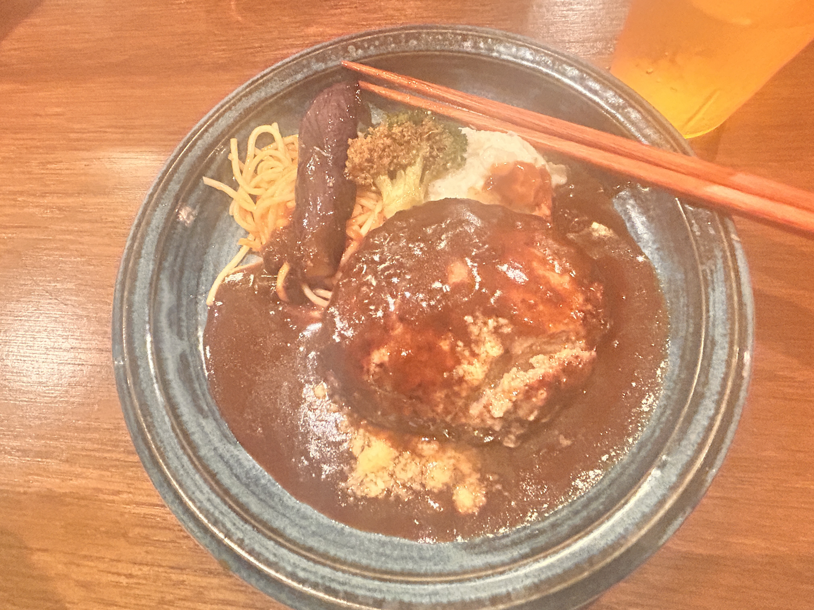
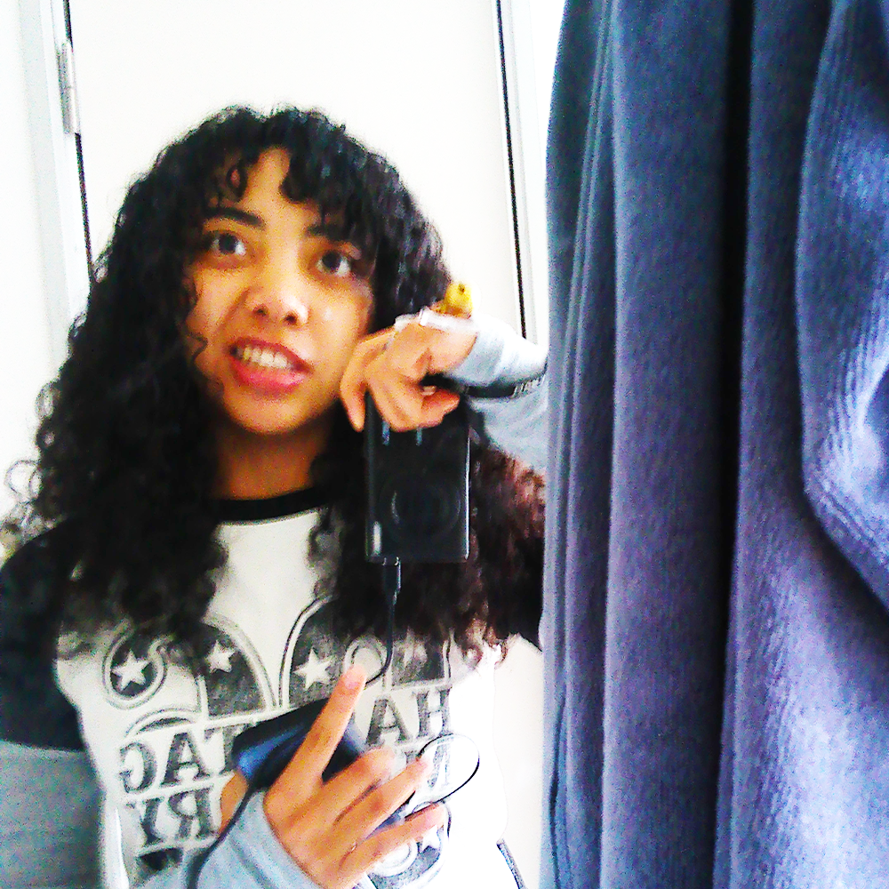

KURT, ARE YOU THERE?
2026.06.05
Dear blog, I think Kurt Cobain is looking after me right now. Why? Because today, the first new song that I listened to outside of Nirvana was SZA’s Boy in Red in which the lyrics states: “I’m here kissing Nirvana.” WOW! Tell me that’s NOT Kurt Cobain telling me something??? I think some of Kurt Cobain soul is in me TBH.
ENEGRY LEVEL: 10%
Today, I am the complete opposite of hyper. My brain feels like it’s struggling to pay attention. I think I was excited yesterday because I got enough sleep. Today I only got about 5.5 hrs of sleep, not enough for a growing girl. Hence, after school I’m gonna head back and sleep. I’m seriously struggling to stay awake a little right now.
On the other hand, I’m sort of tired of being here in the ‘pan. I think I’d be more entertained if I had a bunch of money.
Actually… I get pretty energized listening to Nirvana… I’m being serious, I think there is something about my life that is connecting to Kurt Cobain.
Stuff I ate today
- Starbucks sugar donut
- Grande oat milk latte
- Hamburg steak meal:

- Cookie from a cute pop up named “woofie”
- Banana kit-kat from Son-san
- 76円 Teriyaki burger from Co-Deli
- Kelp onigiri
- Rice crackers
- Package of chocolate covered biscuits
- Three small bananas
Good day of eating. I’m no longer ravenous because of my period, but because I walked around tremendously. Today was pretty much an exploration day so it was fun, but tiresome especially on only five hours of rest.
NIRVANA + PLANS…
Blog, my classmates and I are going to Kyoto on Sunday, so I’m gonna figure out what to do tomorrow. I keep on getting charged for audible, so maybe I’ll do a real book challenge #2 for real this time. Or, maybe I’ll allow myself to sleep somehow. Here’s a pic of me today since I looked super cool:

Nirvana is very much influencing me. Since I’m revealing their songs in correlation to the timeline of the book (when the book says they released said album/compilation/single, I then listen to it), I’ve only listened to the Bleach album and the Incesticide compilation. Out of both, my favorite songs are Aneurism, Scoff, and School. School is my number one. I always feel so cool walking around with it radiating throughout my body, especially with my rockstar haircut. I love all the songs of the Bleach album, it really makes me feel things. Fun fact: Aneurysm is Kurt Cobain’s love song to Tobi Vail, lead singer of Bikini Kill. It is also suspected, but not confirmed, that Smells Like Teen Spirit was also about Tobi Vail (because of the lyric “She’s over bored, and self assured.” Tobi was typically over bored and self assured.) I don’t know her at all, but Kurt really loved her since he said she was the female version of him. I wonder why they separated…
Okay, I’m gonna watch some news and go to bed. BTW, this is the 60th post! Wow! OK. Goodnight, and じゃね！ If you're there Kurt, goodnight to you too. I wish you were still here.